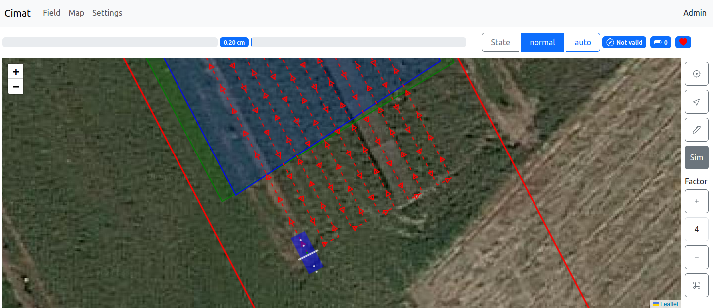

Installation
ARTOF can be installed in two ways:
A System installation from the signed ARTOF APT repository. This is the preferred installation when integrating the framework on a robot platform.
A Docker installation that runs the whole stack in containers, without installing anything on the host. This is useful for testing or developing the framework.
System
Requirements
Ubuntu 24.04 (arch: amd64), connected to the internet. The packages are built against the Ubuntu 24.04 libraries and do not install on other releases.
Install a new robot
Set up a new robot once with the bootstrap script:
# stable channel
curl -fsSL https://minio.ilvo.be:9000/tv115-ilvo-robotics/bootstrap.sh | sudo sh
# dev channel (follow the development builds)
curl -fsSL https://minio.ilvo.be:9000/tv115-ilvo-robotics/bootstrap.sh | sudo sh -s -- dev
The bootstrap installs Docker if needed, adds the signed ARTOF package repository and installs the artof-core package.
The package installs
the
ilvo-roboticsservice, which runs the system manager,a pinned Redis container (
redis-stack-server),the default configuration in
/var/lib/ilvo(ILVO_PATH).
The robot settings in /var/lib/ilvo are never overwritten: the defaults from /usr/share/artof-core/defaults are only copied when missing.
Update a robot
artof-update # newest version
artof-update --list # available versions
artof-update <version> # install a specific version, also to roll back
Warning
An update restarts the ilvo-robotics service and empties Redis, so the system manager reloads redis.init.json.
Do not update during a field job.
Running a robot
systemctl status ilvo-robotics # is the stack running?
sudo systemctl restart ilvo-robotics # restart all processes
sudo systemctl stop ilvo-robotics # stop all processes
journalctl -u ilvo-robotics -f # service output
ls /var/lib/ilvo/logs # one log file per process
dpkg-query -W artof-core # installed version
Uninstall
Each step goes further; stop after the one you need.
Remove the software. This stops and disables the service, but keeps the settings in
/var/lib/ilvo, so a latersudo apt install artof-corecontinues where it left off.
sudo apt remove artof-core
Remove the Redis container and the add-on containers started by the system manager (not all of them may exist). Add
docker image prune -ato also free the image disk space.
docker rm -f redis-stack-server system node-red
Remove the robot data: settings, fields, implements and logs. This cannot be undone, so make a backup first.
sudo tar czf ~/ilvo-backup.tgz /var/lib/ilvo
sudo rm -rf /var/lib/ilvo
Remove the ARTOF package repository.
sudo rm /etc/apt/sources.list.d/artof.sources /etc/apt/keyrings/artof.gpg
sudo apt update
Docker, curl and gpg installed by the bootstrap are left in place because other software may use them.
Docker
Install Docker with root-level privileges first. You may have to reboot after installation.
The ilvo folder of the artof-core project runs the whole stack in Docker:
git clone https://github.com/artof-ilvo/artof-core.git
cd artof-core/ilvo
docker compose up -d
The ilvo/data folder is mounted as ILVO_PATH. It contains the same files as the package defaults, with these differences:
config.json: Redis is reached at"ip": "redis", the compose service name, instead of127.0.0.1.redis.init.json: the add-on containers mount the host data folder inHostConfig.Binds, join the compose network throughHostConfig.NetworkMode(ilvo_artof_network) and publish their ports throughExposedPortsandHostConfig.PortBindings.
The first time, it can take some time for artof-core to pull and install the system and node-red add-on.
The output of the artof-core container shows how the add-ons are launching.
Note
When updating to a new version, clear the Redis cache, so the new redis.init.json is loaded.
Remove the redis_data volume or run redis-cli FLUSHALL.
Check your installation
Browse to the system add-on web app at http://<ip-robot> (port 80 by default, set by the PORT environment variable of the add-on).
Next, browse to the Map tab and press the Sim button. You should see the robot appear as shown in Figure 1.


Figure 1. Map tab: First view of the robot in the system add-on
Thereafter, check the node-red add-on installation at http://<ip-robot>:1880.
Troubleshooting
The service does not start: it waits up to 60 s for Redis. Check
redis-cli ping(expectsPONG) anddocker psfor theredis-stack-servercontainer.Changes to redis.init.json are not applied: the file is only read into an empty Redis. Stop the service, run
redis-cli FLUSHALLand start it again.No PLC data: check that the PLC answers on the IP in
config.jsonand that the protocol settings match the PLC (see Interfaces).
Additional hardware configuration
SimpleRTK3b GPS
Connect to USB ethernet (dhcp) and write the ip 192.168.3.1 in your browser.
In tab
CorrectionsCorrections Input, setUSB1toRTCMv3In tab
NMEA/SBF OutaddNew NMEA streamsetUSB1toGGA+VTG+HDT+HRPand specify your interval.On your computer you need to add yourself to the dialout group
sudo usermod -a -G dialout <your-username>and reboot.Configure automatic symlink creation for a
/dev/ttyACMxto/dev/septentrio0. Therefore paste the following in the file/etc/udev/rules.d/99-septentrio.rules:
sudo vim /etc/udev/rules.d/99-septentrio.rules
# SEPTENTRIO (names are not loaded in lsusb, use ENV variables of udevadm)
SUBSYSTEM=="tty", ACTION=="add", ENV{ID_VENDOR_ID}=="152a", ENV{ID_MODEL_ID}=="85c0", ENV{ID_USB_INTERFACE_NUM}=="02", SYMLINK+="septentrio0"
SUBSYSTEM=="tty", ACTION=="add", ENV{ID_VENDOR_ID}=="152a", ENV{ID_MODEL_ID}=="85c0", ENV{ID_USB_INTERFACE_NUM}=="04", SYMLINK+="septentrio1"
Set "device": "serial" and "usb_port": "/dev/septentrio0" in the gps object of the settings.json file.
Stonex GPS
A Stonex receiver is connected over Ethernet.
Set "device": "socket" with the receiver ip and udp_port in the gps object of the settings.json file.
Enable ssh
To enable ssh execute the following commands:
sudo apt update
sudo apt install openssh-server -y
sudo systemctl status ssh
Remote connection
To access the robot framework remotely, you can configure a VPN connection (e.g. tailscale).
Common issues
Ethernet over USB of the SimpleRTK3b module on a NUC
The Septentrio chip of the SimpleRTK3b GPS modules provides ethernet over USB. This can cause problems on boot time as this USB network device may be selected in favor of the PCI network device. This guide provides a step-by-step approach to create a systemd service file that ensures the specified PCI network device is automatically connected at boot time using nmcli. The provided instructions use systemd, a system and service manager for Linux operating systems, to execute the NetworkManager command line interface (nmcli) once the network is online.
Open a Terminal:
Ctrl-Alt-tCreate Service File: Use a text editor with root permissions to create a new systemd service file. You can use
nanoorvimor any other text editor.
sudo vim /etc/systemd/system/connect-network.service
Add Service Configuration: Copy the following content into the newly created service file. Replace <network device> with the network device identifier you intend to connect.
[Unit]
Description=Connect to a specific network device at boot
After=network-online.target
Wants=network-online.target
[Service]
Type=oneshot
ExecStart=/usr/bin/nmcli dev connect <network device>
RemainAfterExit=yes
[Install]
WantedBy=multi-user.target
Enable and start the service
sudo systemctl enable connect-network.service
sudo systemctl start connect-network.service